第 1 页 · 岭回归、LASSO回归和弹性网络
岭回归、LASSO回归和弹性网络
模型误差 = 偏差（Bias）+ 方差（Variance）+ 数据本身的误差
岭回归
LASSO回归
弹性网络
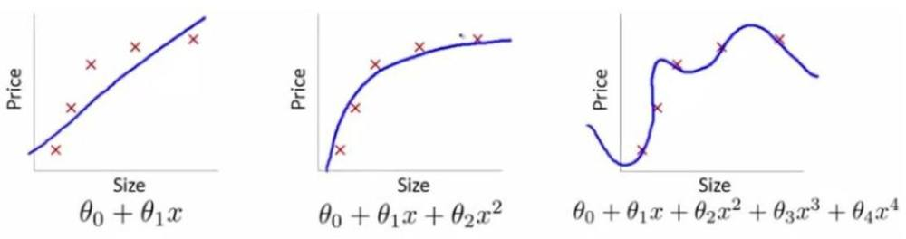
通过正则化防止过拟合
from sklearn.linear_model import Ridge,RidgeCV
rigdeCV = RidgeCV(alphas=Lambdas,normalize=True,scoring='neg_mean_squared_error',cv=15) rigdeCV.fit(X_train,Y_train)
predictedResult = rigdeCV.predict(X_test)
lasso_cv = LassoCV(alphas=Lambdas,normalize=True,cv=10,max_iter=10000)
第 2 页 · 非线性回归模型
非线性回归模型
在统计学中，非线性回归是回归分析的一种形式， 非线性模型是由一个或多个自变量非线性组合。
一些常见非线性模型
分段函数
样条曲线
多项式函数
其他
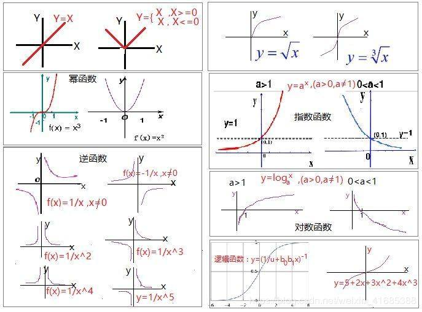
第 3 页 · 非线性回归
非线性回归
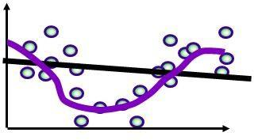
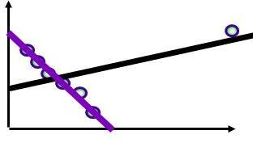
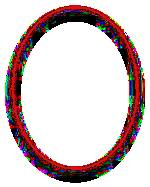
第 4 页 · 非线性回归
非线性回归
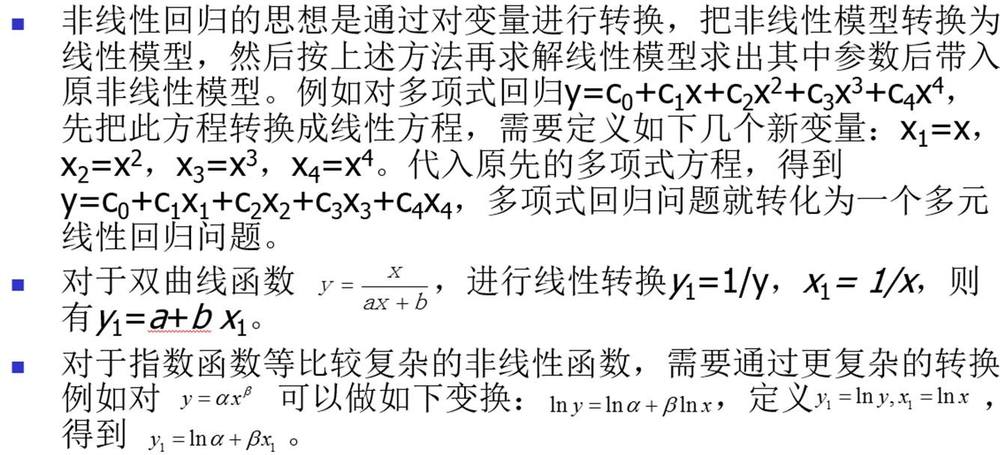
思考：如果多个自变量之间是相互独立或弱相关的，能否分别研究因变量与各个自变量的关系，然后加权求和，求出整个非线性回归方程？
分段函数求解或许是一种可行的选择。
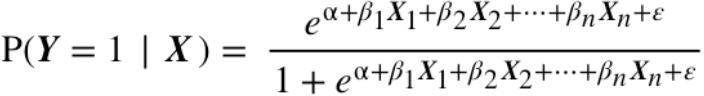
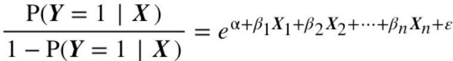
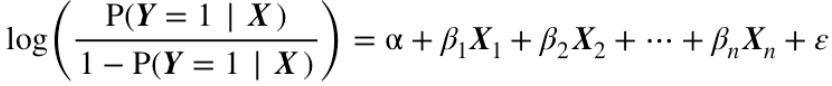
Logistic回归
第 5 页 · 实战案例研讨
实战案例研讨
第 6 页 · 耐热导线工厂质量管理数据分析
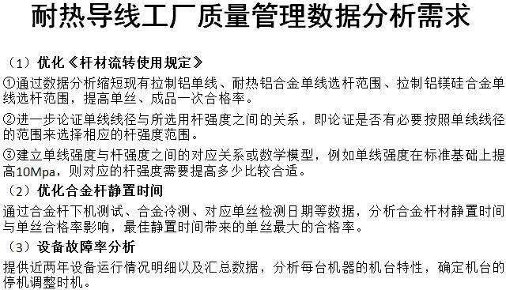
耐热导线工厂质量管理数据分析
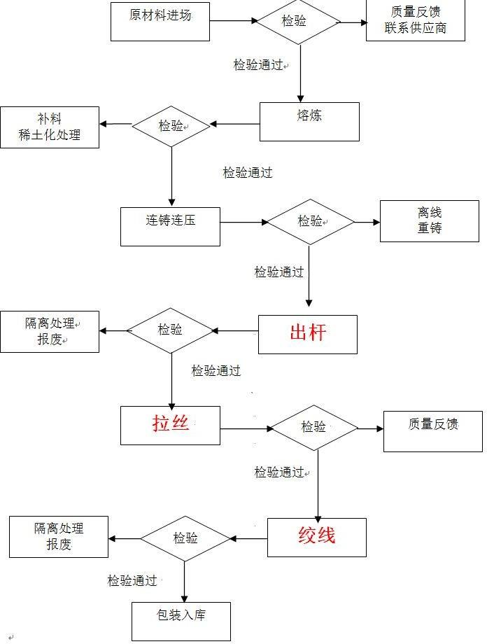
第 7 页 · 杆的抗拉强度和丝的直径的关系（1）
杆的抗拉强度和丝的直径的关系（1）
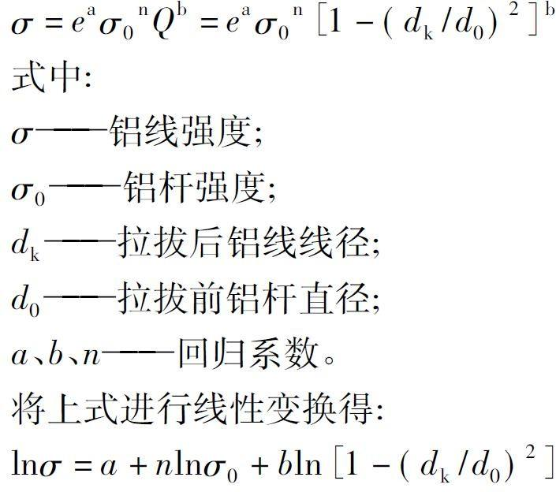
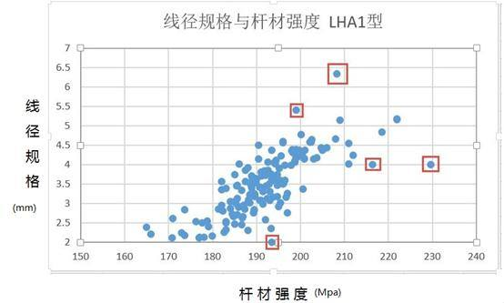
上述经验公式失灵了？
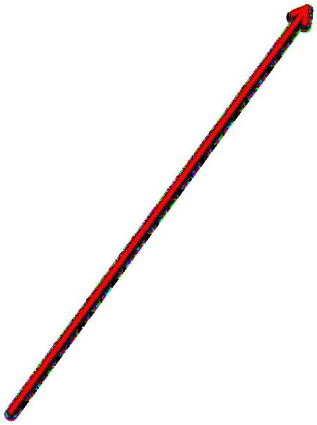
业界经验估计
第 8 页 · 杆的抗拉强度和丝的直径的关系（2）
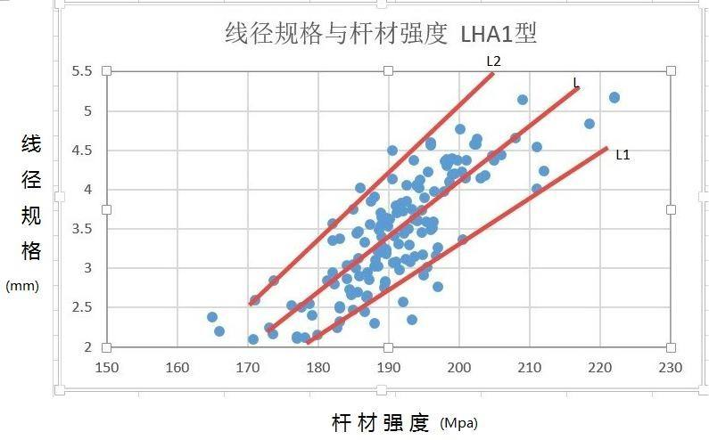
杆的抗拉强度和丝的直径的关系（2）
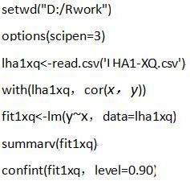
使用区间概念近似杆材强度与单线线径之间的非线性关系。
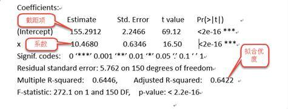
| 回归方程 | 拟合优度 | |
| 拟合线 | L:y=155.29+10.47x | 64.22% |
| 拟合线上限 | L1: y=159.01+11.52x | |
| 拟合线下限 | L2: y=151.57+9.42x |
思路的创新
第 9 页 · 练习题-身高预测
练习题-身高预测
根据样本的足长和步幅数据，拟合它们与身高的关系？
提示：可以使用多元（线性）回归、神经网络等方法。
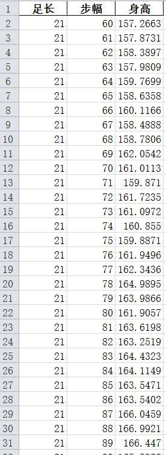
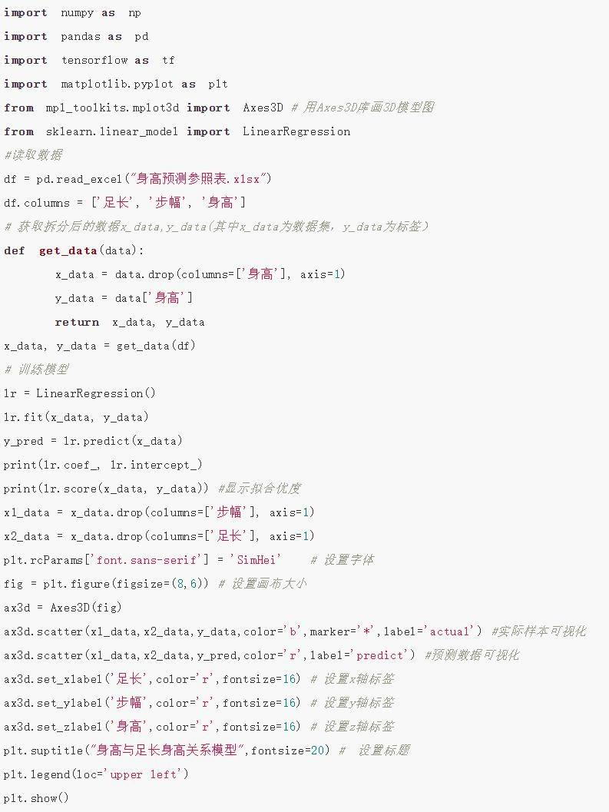